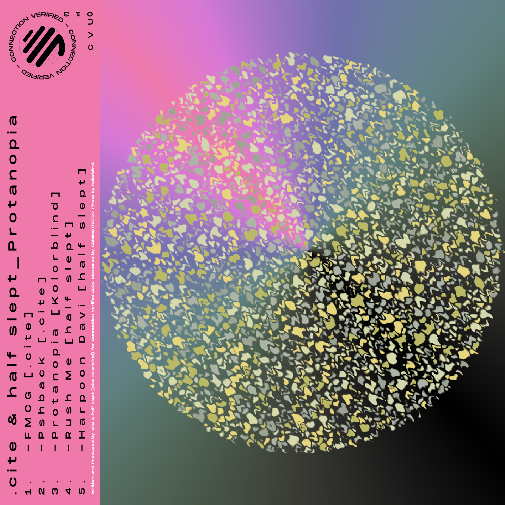
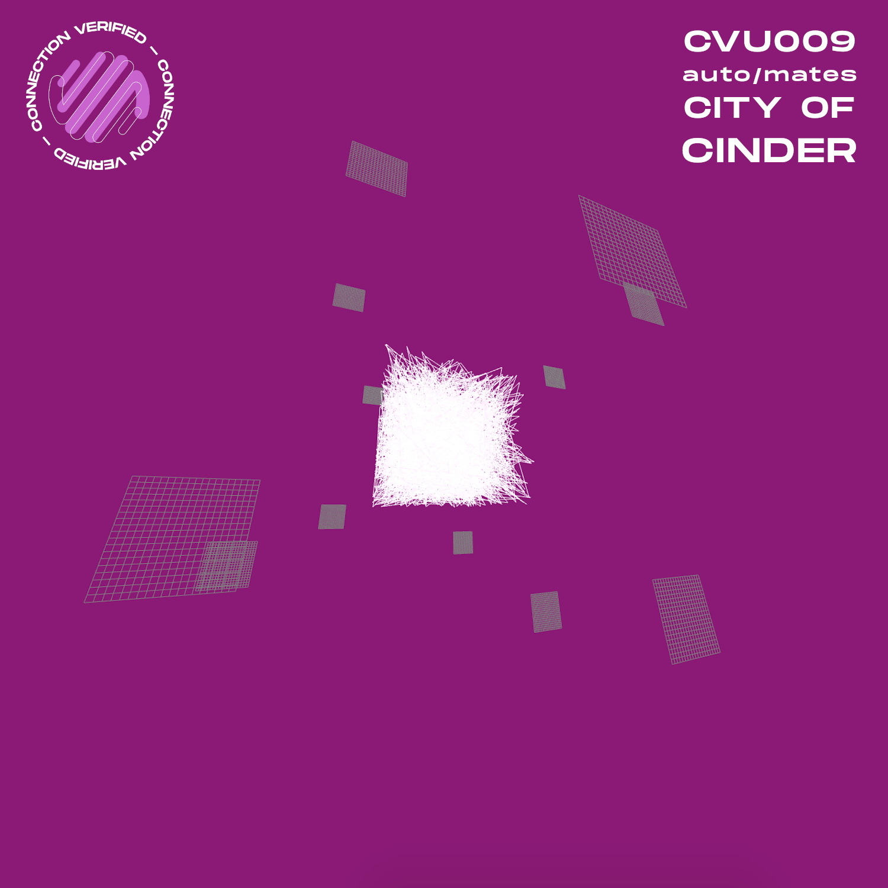

Cover Art
CVU013
CVU09
Conor Wall

I'm a passionate multimedia designer with a keen interest in exploring the realm of interactivity, particularly at the crossroads of sound and interaction. I am fascinated by the way immersive auditory experiences come to life through creations such as games, animations, and web applications.
Drift is a web interactive that aims to create a mesmerizing visual and audio experience.
A small interactive made with Unity that explores ideas of minimalism, ma, and wabi-sabi.
Caffeinism is an animated project by yanwen wang inwhich i did the sound design and music for.
Ponder is an audiovisual experiment using Hydra, a web-based visual programming language, and a generative modular patch.
Flicker is an audiovisual work created by generating a video using quadbike. From this generated video, I then began to sound design the outputted visuals.